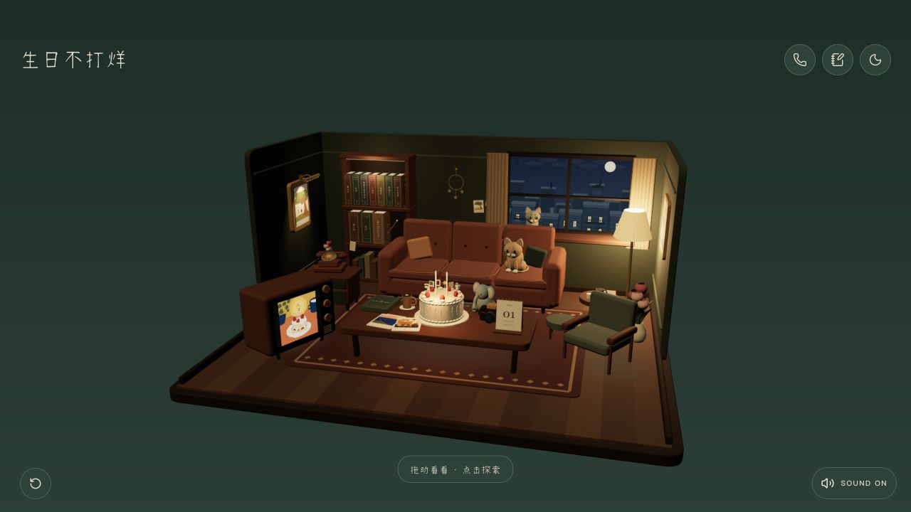

PROJECT NOTES / 2026.09
Birthday Stays Open
A cozy 3D birthday room made for a friend, where little discoveries lead to a wish

Birthday Stays Open is a small 3D room made to be revisited. Photos, telephone messages, books, and little keepsakes turn a birthday greeting into a place you can explore at your own pace.
Change the weather, dial the phone, flip a photograph, or say hello to the cat. Discovering five kinds of memories unlocks the cake. Make a wish, watch the room light up again, and find a letter waiting at the end.
The public version includes illustrative memories and can be remixed into a room for someone you care about. Exploration progress stays on the device, so a return visit can continue where the last one ended.